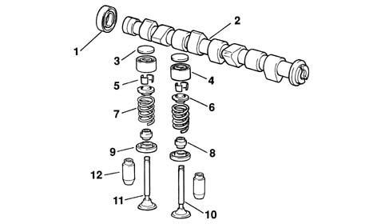

Introduction - TIMING SYSTEM
- Path
- Descriptions > 10 ENGINE > 1036 TIMING SYSTEM > Introduction - TIMING SYSTEM
- Kind
- system description
- Applies to
- all engines; all production periods
- Interactive page
- https://sloeber94.github.io/elrnDB-fPnd/en/#/2753456
Applies to: engines: 1.1, 1.2 8v; all production periods
A 'spheroid cast iron' overhead camshaft operated by a timing belt.
Applies to: engines: 1.1, 1.2 8v; all production periods
There are the same number of suitably positioned cams as there are valves to operate; at the front, it is prepared for the fitting of the toothed pulley, through which the motion of the crankshaft is received, by means of a suitably tensioned belt (see 'repair procedures' section).

1, Camshaft oil seal 2, Camshaft 3, Tappet adjustment shim 4, Tapppet 5, Cotters 6, Upper shim 7, Spring 8, Oil seal 9, Lower shim 10, Inlet valve 11, Exhaust valve 12, Valve guide
Applies to: engines: 1.1, 1.2 8v; all production periods
The camshaft is the component which, through the cams, opens the valves for the required time.
Since in 4 stroke engines the working cycle takes place during two revolutions of the crankshaft, whilst the valves have to open only once during the cycle, the camshaft only has to rotate once; therefore, the toothed pulley fitted on the camshaft will have twice the number of teeth as the pulley fitted on the crankshaft.